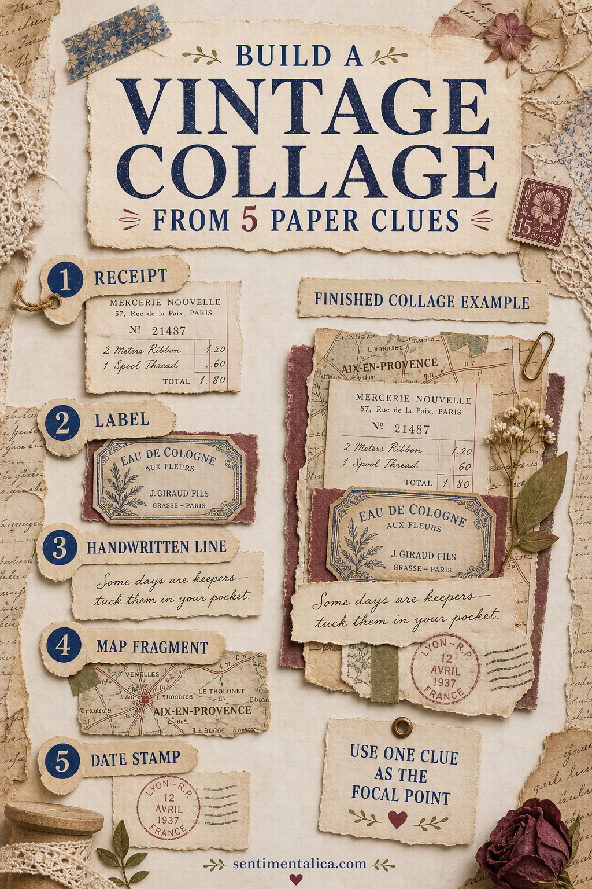
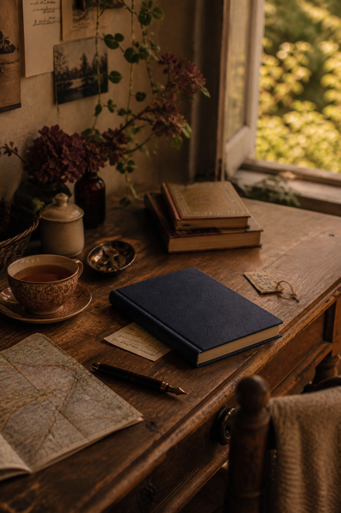

A vintage collage feels convincing when its pieces seem to belong to the same life. Five ordinary paper clues can suggest a place, errand, voice, and date without filling every inch of the page.

Start with a receipt
A receipt gives the collage an event: something was bought, somewhere, on a particular day. Use a copy if the original is thermally printed, since thermal paper can darken and fade. Keep the useful heading, date, or item line rather than every blank edge.
Add a label with a different shape
Choose a bottle, parcel, luggage, or handwritten label. Its job is to interrupt the receipt's rectangle and introduce a second material. Overlap one corner so the two clues begin to feel connected.
Include one handwritten line
Write a sentence that a photograph could not show: why you stopped, what the room smelled like, or what someone said. Use your own handwriting. It does more to make the page personal than another decorative image.

Place a map fragment beneath
A small map supplies geography and a directional line. Put it low in the stack as a base or let one road emerge from an edge. You need only enough information to suggest movement or place.
Finish with a date stamp
A stamped date, postmark, or handwritten date gives the clues a shared time. Repeat its ink color once elsewhere, perhaps in the title or a narrow paper strip. Avoid several unrelated dates unless the passage of time is the subject.
Choose the focal clue
Make one piece larger, darker, or more central. The remaining four should be quieter. If everything has equal contrast, cover part of one item with translucent paper or move it farther beneath the stack.
Keep the story plausible
Do not combine a Paris label, American road map, and unrelated modern receipt merely because each looks old. Either choose clues from one place or explain the journey in your writing. Coherence matters more than perfect historical matching.
Protect original evidence
Scan family letters, old tickets, photographs, and fragile receipts before using them. Work with copies when an item cannot be replaced. The collage can carry the visual story while the original remains safely stored.
Limit the palette
Let aged cream and tea brown occupy most of the page. Add one deep ink color, such as navy or burgundy, and repeat it only twice. A small olive accent can connect map lines or botanical details. Restricted color makes mixed paper sources feel related.
Use edges to show hierarchy
Keep the focal clue almost whole, tear the supporting pieces more narrowly, and let the map disappear beneath them. Straight edges feel factual; torn edges feel fragmentary. Mixing the two helps the collage read as evidence rather than one decorative block.
Write the missing connection
If the five clues do not naturally explain one another, add a two-sentence caption. Name the place or event, then say why these papers were kept. The writing does not have to be poetic. Clear context gives ordinary objects their emotional weight.
Leave one quiet margin around the cluster. The open paper makes the five clues feel discovered and considered rather than collected at random.
Image note: Some visuals in this article were created with AI and curated by Sentimentalica.